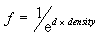
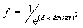
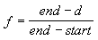

Defines constants that describe the fog mode.
typedef enum _D3DFOGMODE {
D3DFOG_NONE = 0,
D3DFOG_EXP = 1,
D3DFOG_EXP2 = 2,
D3DFOG_LINEAR = 3,
D3DFOG_FORCE_DWORD = 0x7fffffff
} D3DFOGMODE;



The values in this enumerated type are used by the D3DRS_FOGTABLEMODE render state.
Fog can be considered a measure of visibility—the lower the fog value produced by a fog equation, the less visible an object is.
Header: Declared in d3d8types.h.